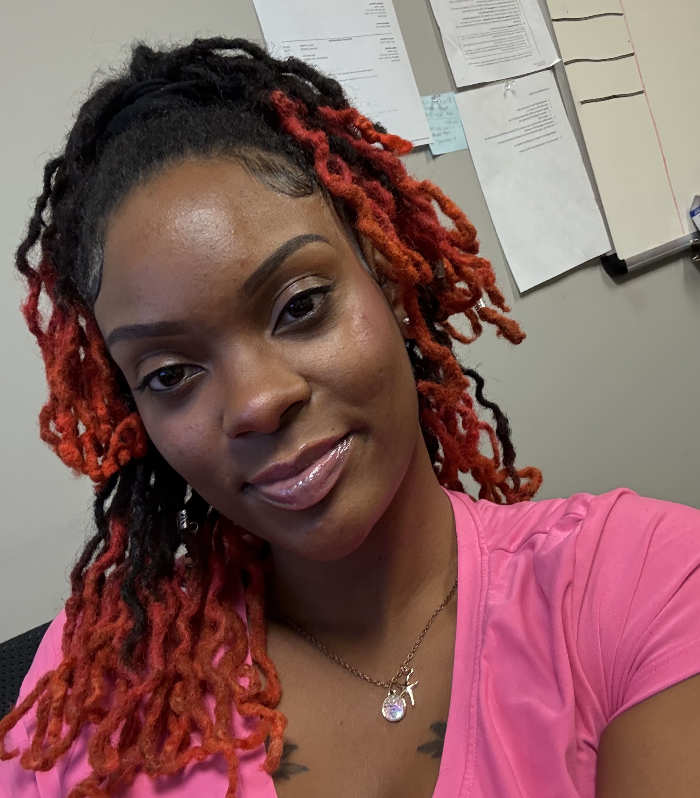

Introduction
“You only have 1 life, live it to the fullest!”
Personal Background: I have been in IT for about 7 years now working as a pc technician, helpdesk analyst, digital art and website creator. Prior to working in IT I worked as a barista, a childcare teacher as well as a customer service representative in my teens.
Academic Background: I attended My Computer Career so that I could get some IT certifications after landing my first IT job at 19.
Background in this subject: I have been taking on many different roles in order to expand my skills as an IT tech. I plan to continue with IT for the rest of my life. I especially look forward to learning how to code for not only websites but also for mobile apps.
Primary Computer Background: I complete my work using a Lenovo laptop that is on Windows 11.
Courses I'm Taking & Why:
- MAT-171: Precalculus Algebra: I am taking this course because I have dropped it multiple times due to being too scared to take it online.
- WEB-115: Advanced Markup and Scripting- I am taking this class to learn how to write and read code as well as correct it. I am also retaking this class as I had to withdraw last semester.
- CTS-118: IS Professional Comm- I am taking this course since it is required for my degree but hopefully it teaches me how to communicate better.
- PHI-240: Introduction to Ethics: I am taking this course because it is required for my degree.
Funny/ Interesting Item about Yourself: I am a mother of 2 children, a 5 year old boy and a 1 year old girl. I am also a plant mom to 42 different plants and counting. Lastly, I love to cook and bake, so sometimes I sell my food.